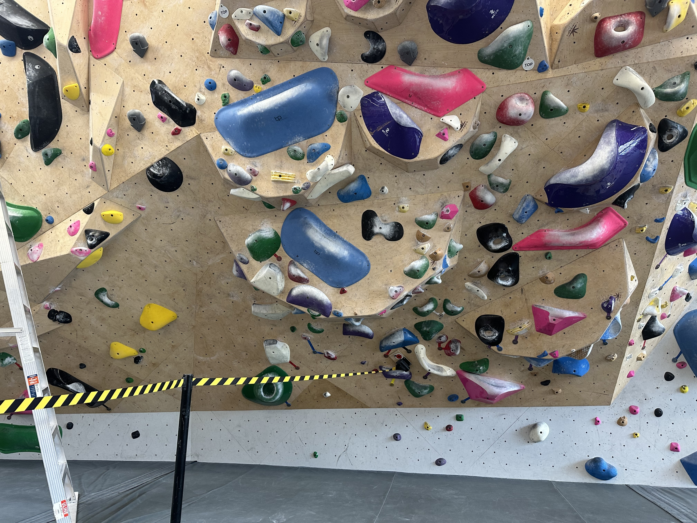
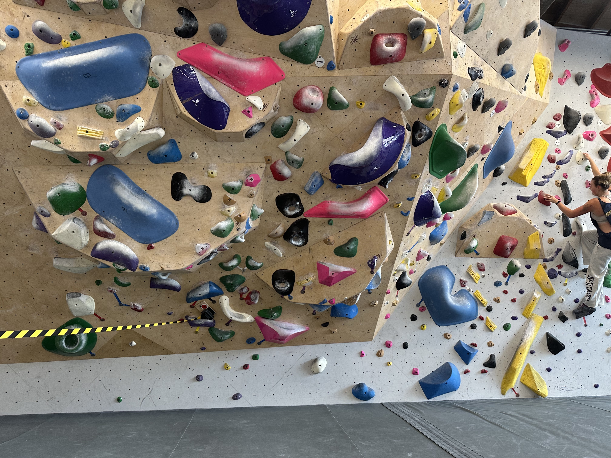
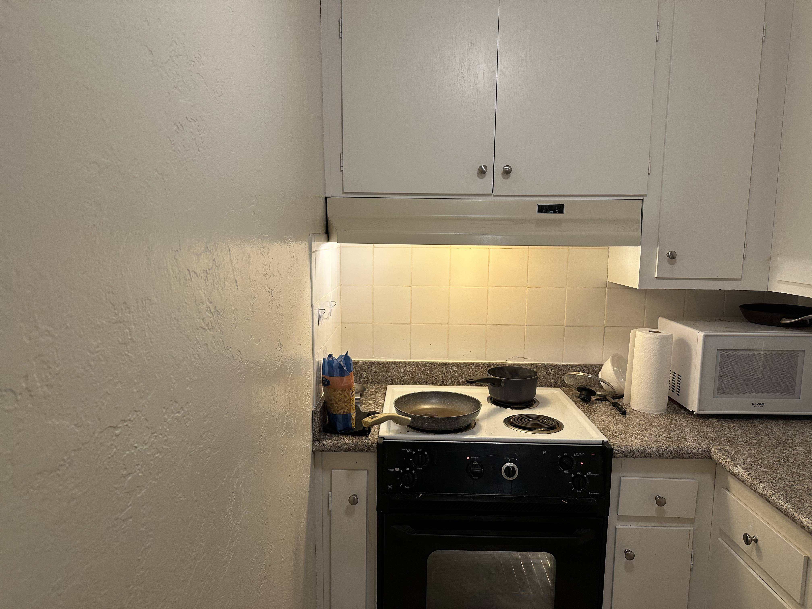
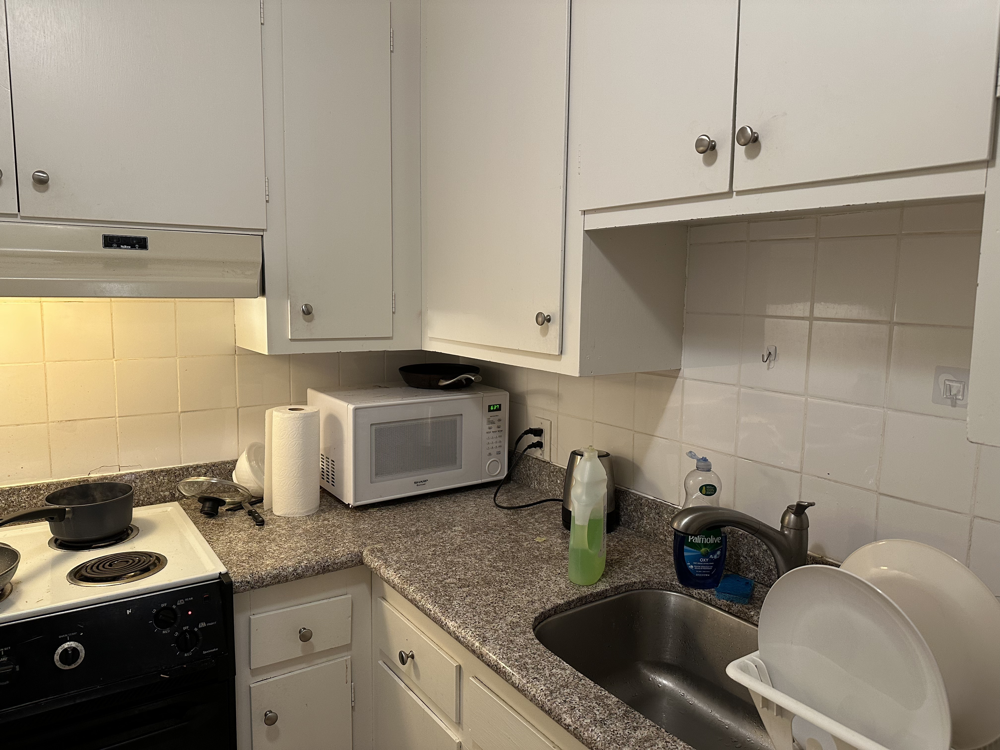
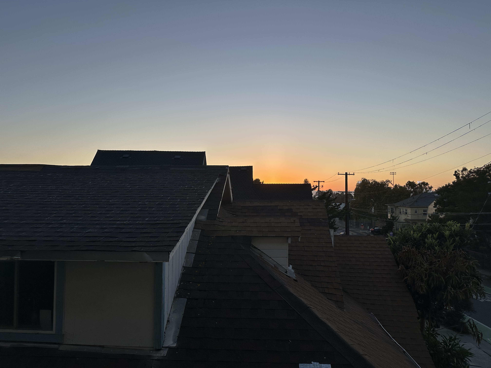
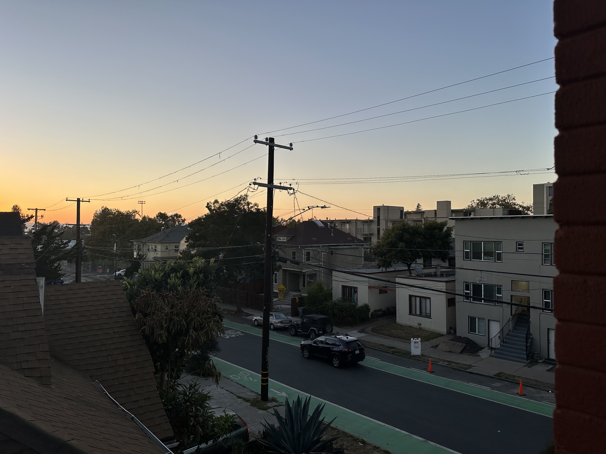
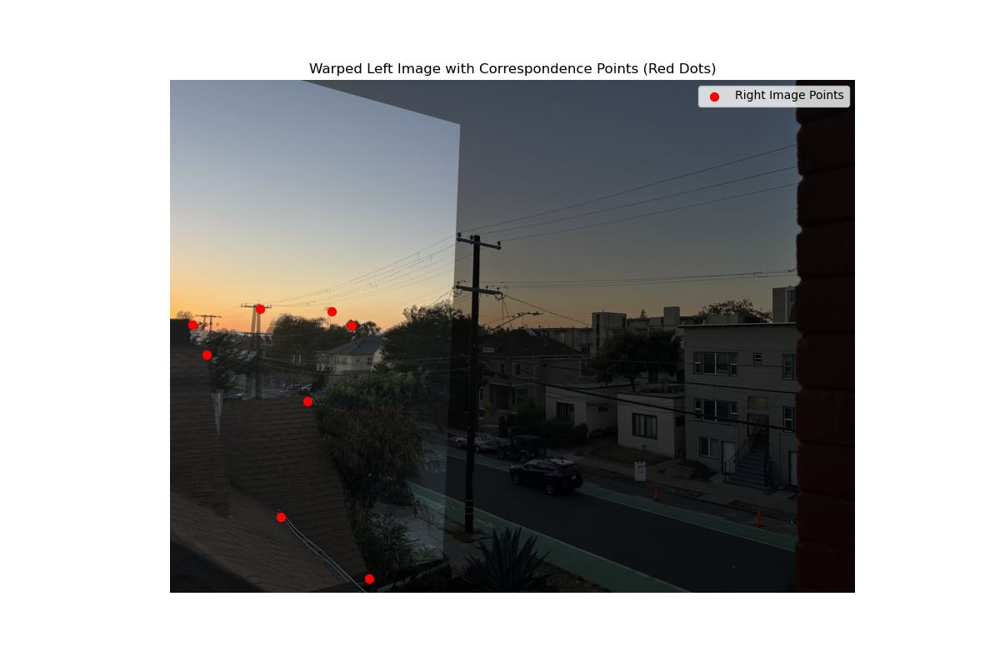

The following images were taken in/from my apartment and at Mosaic Boulders.






Here is the matrix \( A \):
\[ A = \begin{bmatrix} 3154 & 1967 & 1 & 0 & 0 & 0 & -2548432 & -1589336 & -808 \\ 0 & 0 & 0 & 3154 & 1967 & 1 & -5970522 & -3723531 & -1893 \\ 2672 & 1684 & 1 & 0 & 0 & 0 & -566464 & -357008 & -212 \\ 0 & 0 & 0 & 2672 & 1684 & 1 & -4325968 & -2726396 & -1619 \\ 3054 & 2610 & 1 & 0 & 0 & 0 & -1988154 & -1699110 & -651 \\ 0 & 0 & 0 & 3054 & 2610 & 1 & -7864050 & -6720750 & -2575 \\ 2554 & 1541 & 1 & 0 & 0 & 0 & -332020 & -200330 & -130 \\ 0 & 0 & 0 & 2554 & 1541 & 1 & -3690530 & -2226745 & -1445 \\ 2850 & 1441 & 1 & 0 & 0 & 0 & -1510500 & -763730 & -530 \\ 0 & 0 & 0 & 2850 & 1441 & 1 & -3847500 & -1945350 & -1350 \\ 3232 & 1435 & 1 & 0 & 0 & 0 & -3073632 & -1364685 & -951 \\ 0 & 0 & 0 & 3232 & 1435 & 1 & -4401984 & -1954470 & -1362 \\ 3575 & 3021 & 1 & 0 & 0 & 0 & -4193475 & -3543633 & -1173 \\ 0 & 0 & 0 & 3575 & 3021 & 1 & -10506925 & -8878719 & -2939 \\ 3384 & 1527 & 1 & 0 & 0 & 0 & -3614112 & -1630836 & -1068 \\ 0 & 0 & 0 & 3384 & 1527 & 1 & -4900032 & -2211096 & -1448 \end{bmatrix} \]
Here is the homography matrix \( H \):
\[ H = \begin{bmatrix} 2.18410571 & -0.23194388 & -2662.939733 \\ 0.40267535 & 1.62936492 & -1111.072452 \\ 0.0002844713 & -0.00007463335 & 1 \end{bmatrix} \]



TODO